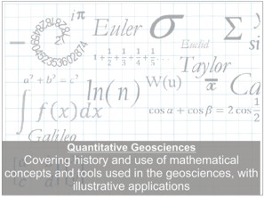

| Homepage | Research | Publications | Software | Teaching | Prospective Students | KU Hydrogeology |
Page Contents
Courses Taught
|  |
Field Trips
Contaminants in GroundwaterThis trip takes place over 3 days. The stops include Big Brutus, the Tar Creek Superfund area, a constructed wetland for groundwater treatment (with help from Dr. Nairn, U of Oklahoma), the Ozark Underground Laboratories, and one of the first permeable reactive barriers installed on an industrial site, Kansas City. |
||
Exploring Karst TerraneThis field trip takes place over three days. The stops include the Missouri State Part Ha Ha Tonka, The Ozark Underground Labs, Blanchard Caverns in Arkansas, and Bluffdwellers Cave near Noel, Missouri. The processes of landscape evolution in karst areas, surface and cave morphologies, and the hydrology of karst regaions are reviewed. |
||

|
||
Glaciation of Northeastern KansasThis field trip occurs in one day. The area visited is located across the Kansas River from Wamego, KS. A cut bank in an alluvial terrace on Mill Creek, and a topographic high point on bedrock are characterized for the appearance of erratics. A ridge made up of many erratics of similar size is visited. A likely spillway that may have drained a proglacial lake is visited. The field evidence is used to hypothesize on the location of the glacial front and the number of ice advances in the area. |
||
River GeomorphologyThis field trip occurs in one afternoon. Stops include a dammed river, a sandbar, river terraces, meander scrolls, a scour feature, flood levels marked on a Lawrence landmark, outcrop of sandstone with braided river deposits. |
||
Soils of Douglas CountyThis field trip occurs in one day. Kansas soils are predominantly mollisols. However, this trip finds examples of buried soils, till, vertical accretion on a floodplain, soils formed from sediments and those formed in situ, colluvial soils, and soil on dunes of sand. Soil textures and structures are examined and their implications for water drainage explored. |
||
Teaching Highlights
|
Publication of Devlin, J.F., Brookfield, A., Huang, B., Schillig, P.C. 2012. Using the Domenico Solution to Teach Contaminant Transport Modeling Journal of Geological Education, v. 60, no. 2, 123-132. developed as a Contaminant Transport exercise. |
|
| Winning the Kemper award for teaching excellence, August, 2010. | |
|
Publication of Devlin, J.F. 2003. Rationalizing geomorphology with an energy balance. Journal of Geological Education, v. 51, no. 4, 398-409. developed as a Geomorphology course lecture. |
|
|
Publication of Devlin, J.F. 2003. A spreadsheet method of estimating best fit hydraulic gradients using head data from multiple wells. Ground Water, v. 41, no. 3, 316-320.. developed as a Contaminant Transport course lecture. |